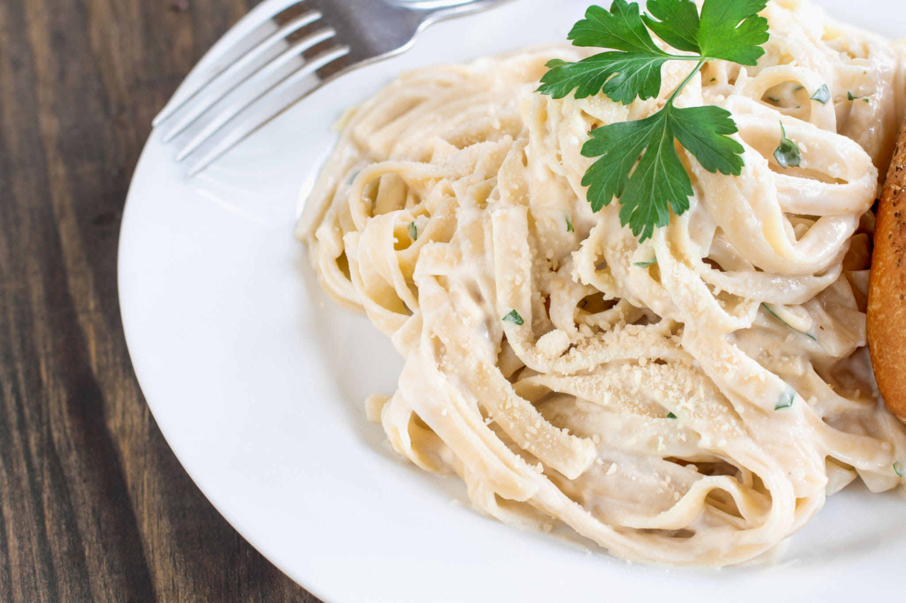

Fettucine Alfredo

Description
Super simple, easily extendable fettucine alfredo dish.
Few ingredients, minimal prep, and low cooking time.
Enhance this dish with mixins like meat, seafood, tofu, or sauteed vegetables!
Ingredients
- 12 oz. dry Fettucine pasta
- 1/2 cup butter
- 1/3 pt. heavy cream
- 1/3 cup grated Romano cheese
- 1/4 cup grated Parmesan cheese
- 1 dash garlic salt
- salt and pepper, to taste
- [Optional] 1/3 cup beef/chicken/tofu/shrimp/brocooli, diced/peeled/washed.
Steps
- Bring a large pot of lightly salted water to a boil.
Add fettucine and cook for 8-10 minutes, or until al dente. Drain.
- [Optional] If adding something into the pasta, drizzle some oil onto
a pan and bring to medium-high heat. Once hot, add mix in, season to
taste, and stir around until cooked. Allow to crisp, and remove from
pan as soon as possible. Keep warm.
- Melt butter into cream in a large saucepan over low heat; add salt,
pepper, and garlic salt. Increase heat to medium; stir in grated Romano
and Parmesan cheese until melted and sauce has thicked.
- Add cooked pasta to sauce and toss until thoroughly coated; add mix in and toss once more; serve immediately.